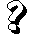

|
A kézben lévõ lapok bedobása és helyettük az utoljára lerakottak felhúzása
 Jelzéstulajdonságok:
Illeszkedik rá:
Jelzéstulajdonságok:
Illeszkedik rá:
Az aktuális színhez illeszkedõ lap (l. SzínSúgó); ezen kívül
vagy  jelzésû lap,
valamint  jelzésû lap,
ha a jelzéslap jelzése a felsoroltak közül való. jelzésû lap,
ha a jelzéslap jelzése a felsoroltak közül való.
|
Lerakásakor a kézben lévõ lapokat mind be kell dobni és helyettük a legutóbb lerakott lapokat kell
felhúzni. Pontosítva: a játékos (a szóbanforgó -n kívüli) lapjaival egyezõ számú kártyát elvesz
a lerakott lapok halmának tetejérõl. A saját lapjait ráteszi a halomra, legfelülre a -lapot. A
felvett lapok lesznek ezután az õ lapjai.
Ha -lap lerakásakor nincs még annyi visszavehetõ lap, amennyire szükség lenne, a maradékot a
pakliból kell felhúzni.
|

|

 Bevezetõ |
Bevezetõ |
 Szabályok |
Szabályok |
 Súgó |
Súgó |
 Paklik
Paklik